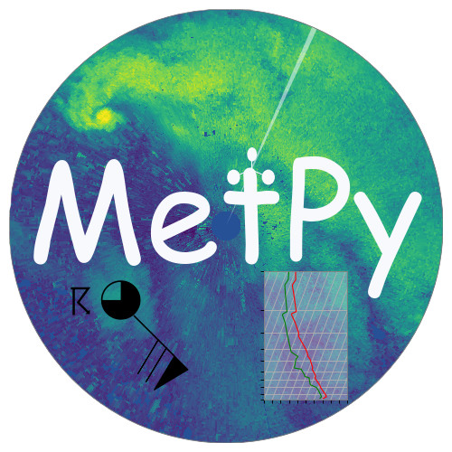
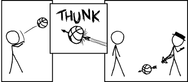

Cross Sections in MetPy
(with xarray...and xkcd)
Unidata Summer Internship 2018
Jon Thielen (with Ryan May and John Leeman)

Working on MetPy
- Started contributing in Nov 17'
- Applied in Jan 18'
- Started internship in May

Initial Plans

Another Plan: Cross Sections...

...with xarray!